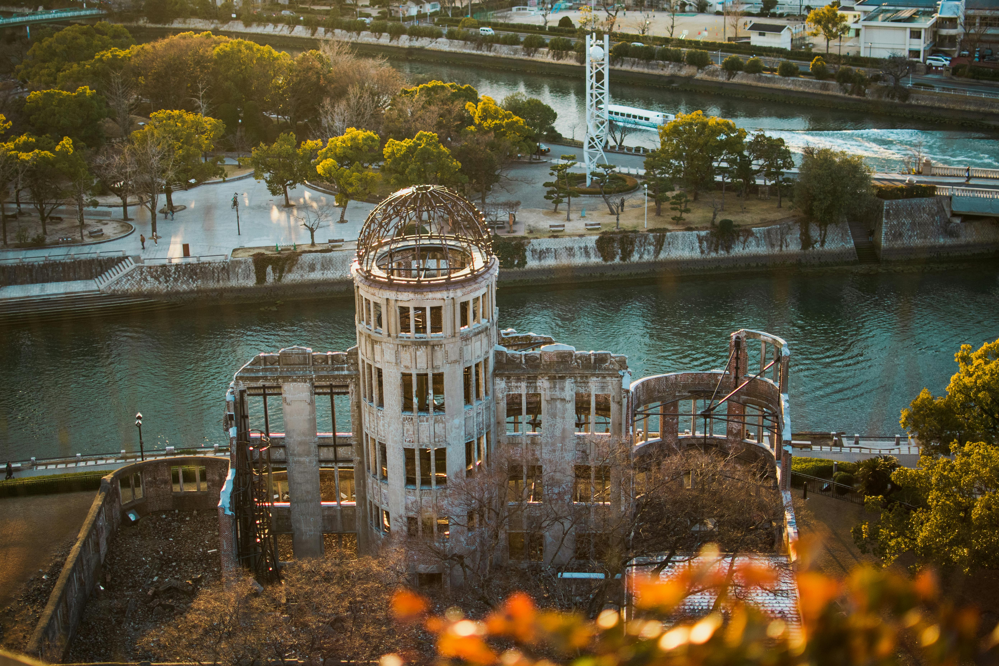
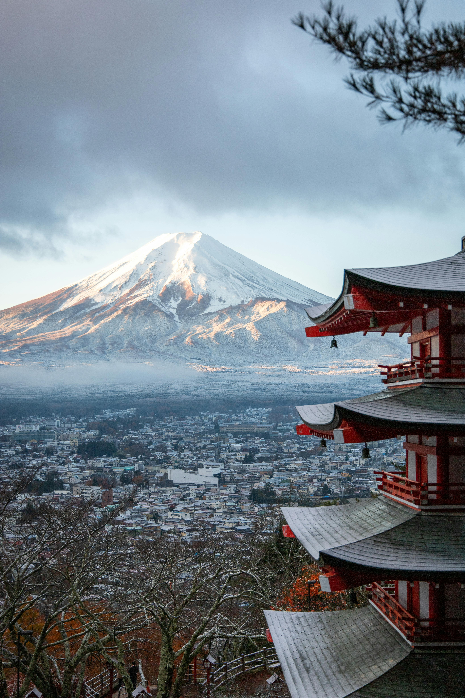
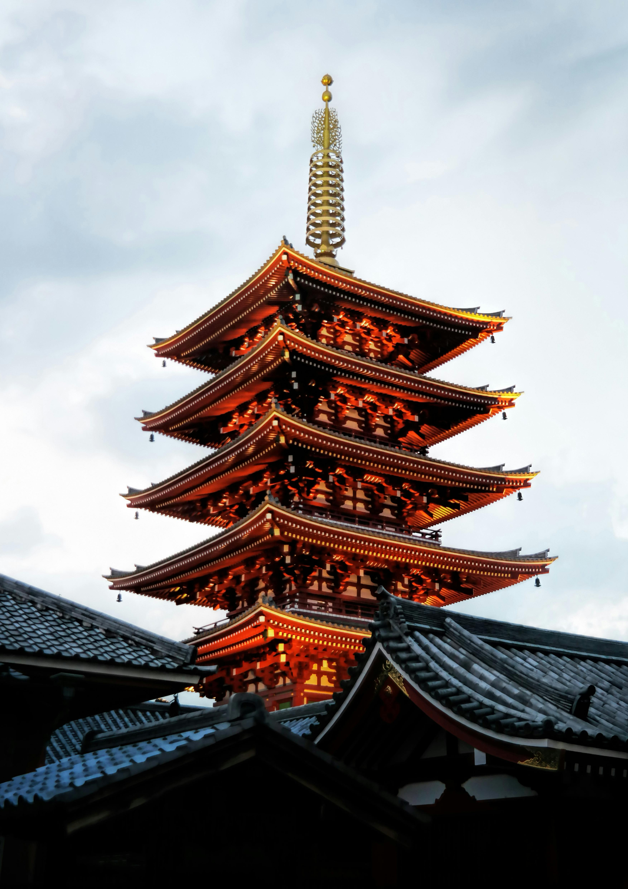
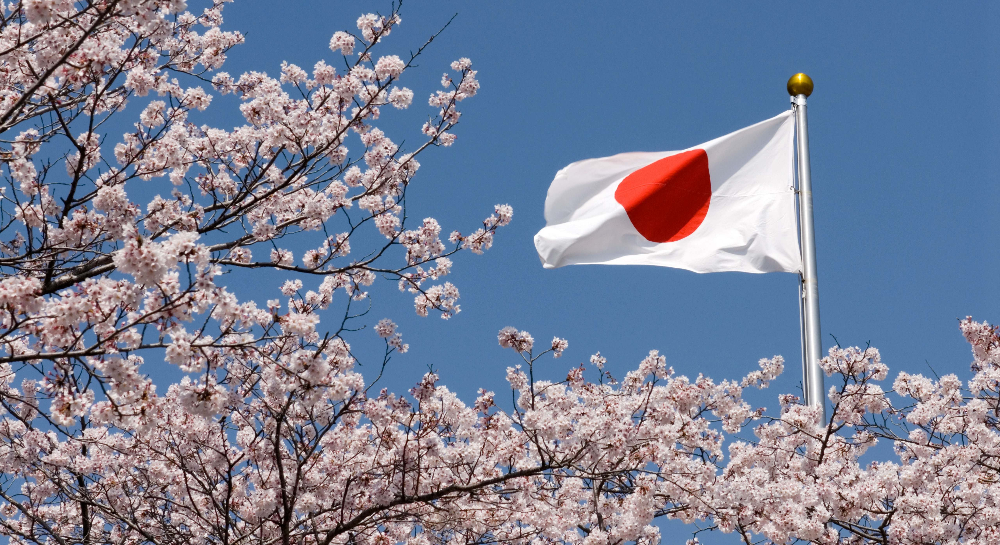
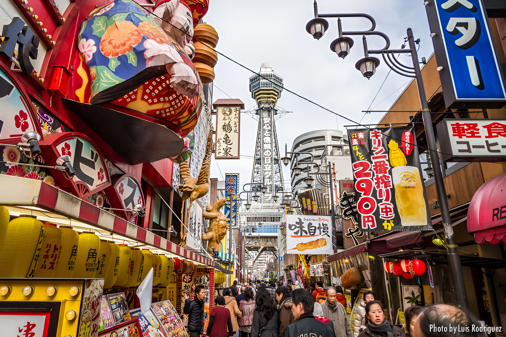
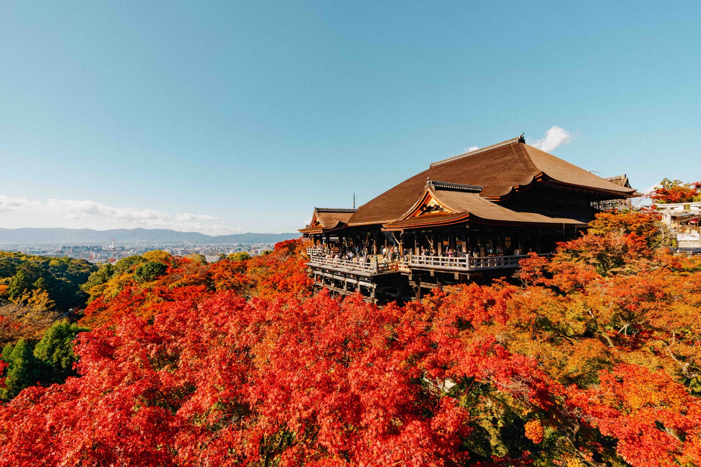

Donde la tradición se encuentra con el mañana. Explorar Japón es descubrir un mosaico de regiones, cada una con su propio sabor, su propio arte y sus propios rituales.
Déjate envolver por un territorio donde lo ancestral y lo innovador no solo conviven, sino que crean algo totalmente único.
Tu viaje por el corazón del Sol Naciente comienza aquí.



Descubrí los destinos más visitados
Algunos de los destinos más visitados reflejan la diversidad cultural del país, desde la innovación de Tokio hasta la tradición de Kioto y la historia de Hiroshima.
Cruce de Shibuya
Tokio
Torre Tsutenkaku
Osaka
Kiyomizu-dera
Kioto
Dotonbori
Osaka